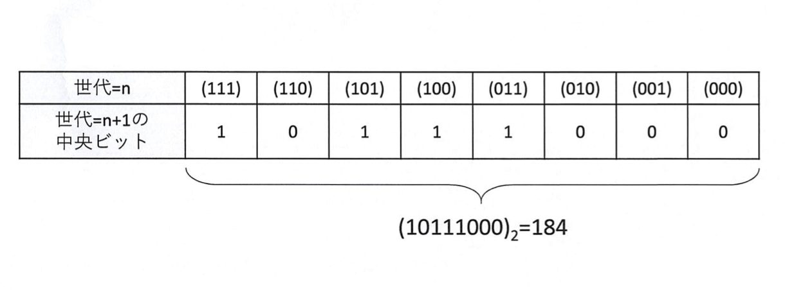
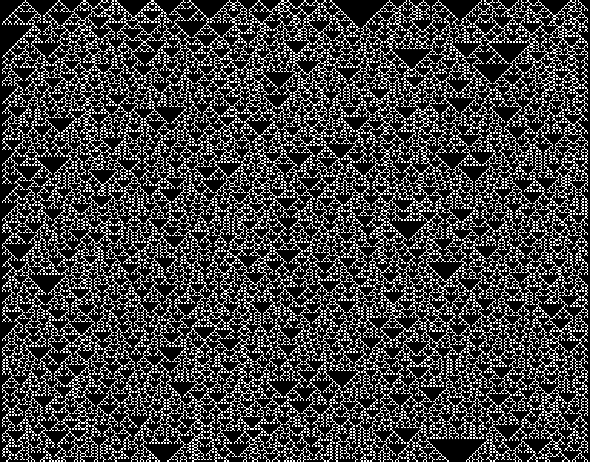
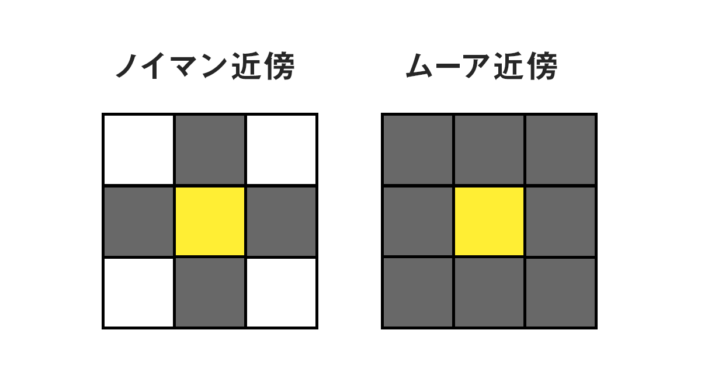

スパコン体験塾2023
はじめに
今年の8/22~8/23にかけて開催された、スーパーコンピューター「富岳」を使ってセルオートマトンを計算するというイベントに参加したので、そのイベントの工程や内容などを書こうと思う。
目次
スパコン体験塾で行ったことを纏めてみたところかなりの長文になってしまったので、目次を作成しておく。
スパコン体験塾とは
スパコン体験塾は高度情報科学技術研究機構（RIST）が主催するイベントで、 参加者がスパコン「富岳」を使いながら与えられた課題を解くという内容となっている。
今年はポートアイランドでの現地開催となった。
スケジュール
- 1日目
- ~10:00 現地集合
- 10:00~17:00 富岳を使ってプログラミング
- 2日目
- ~10:00 現地集合
- 10:00~12:30 プログラミング
- 12:30~14:00ぐらい 富岳についての講義など
- 14:00ぐらい~17:00 プログラミング
1日目
1日目は主に富岳の使い方やセルオートマトンはどのようなものかなどの基本的な知識を教えてもらい、その後14個ある課題を解き始めた。
1日目の朝はセルオートマトンの説明を担当していたRISTの方からただならぬオーラを感じたことが印象に残っている。
今回は先ほど書いたように課題が14個あったのだが、内訳としては
- 課題を解く準備×1
- 1次元初等セルオートマトン×4
- 2次元初等セルオートマトン×4
- 確率的セルオートマトン×4
- 並列計算×1
となっており、個人的には課題を解く準備が一番難しかった。(セグフォと言われているエラーに苦しめられた。)
1日目の終わりにはなんとか課題3まで解き進めることができた。
↓1日目に撮った写真たち


2日目
2日目は並列計算の仕組みであるMPIについて学んでから課題を解き始めた。
僕は普段Javaという言語を使って並列計算をすることが多いのだが、その時は
new Thread(()->{System.out.println("Hello Thread");}).start();
というように書く。
しかし、MPIを使う場合は
MPI_Init(NULL,NULL);
int myid;
MPI_Comm_rank(MPI_COMM_WORLD,&myid);
printf("Hello world! I am in %d\n",myid);
MPI_Finalize();
と書くので、C言語らしさを感じた。
昼過ぎからは、スパコン富岳の見学に行ってきた。
理化学研究所計算科学研究センターにて富岳についての講義をしてもらったのだが、富岳はなかなかお金がかかるということやストレージ・メモリ関連などの詳しい話について知ることができた。
講義の後、目の前にあったスクリーンが上がり、スクリーンの後ろの幕が開くと富岳が出てきた!!
 なかなかの迫力である。
なかなかの迫力である。
富岳を見た後は集合写真を撮った。
見学から戻ってきてからはまた課題の続きを解き始め、僕が課題をすべて解き終わったぐらいでインタビューを受け、体験塾が終わった。スパコン「富岳」体験塾＠神戸 終了しました
— スーパーコンピュータ「富岳」(公式) (@Fugaku_hpci) August 23, 2023
「富岳」を "使って" "見て"、インパクトのある体験ができたでしょうか🥰?
今回は東京からも参加者がいました！
今までで一番いろんなエリアからご参加があり、好きなことを深く語り合えるお友達ができていました！
頑張るみんなが輝いていましたよ🥰 pic.twitter.com/MUzlAOie2i
(後日インタビューが公開されたらここにリンクを張る予定)
体験塾の結果として、僕はすべての課題を何とか解き終わったのだが、一緒に参加していた部長が課題1の途中で…課題1!?
…
見なかったことにしよう。
課題
今回は、富岳を使って「セルオートマトン」というシミュレーションを行った。
セルオートマトンとは
セル・オートマトン（英: cellular automaton、略称：CA）とは、格子状のセルと単純な規則による、離散的計算モデルである。計算可能性理論、数学、物理学、複雑適応系、数理生物学、微小構造モデリングなどの研究で利用される。非常に単純化されたモデルであるが、生命現象、結晶の成長、乱流といった複雑な自然現象を模した、驚くほどに豊かな結果を与えてくれる。-Wikipedia
つまりは、マス目状に区切られた空間の中で全てのマスに同じルールを与えて時間を経過させることにより色々な現象をシミュレートできるというもの。
課題1~4
最初の課題として、1次元初等セルオートマトンというものを作った。
1次元初等セルオートマトンとは
1次元初等セルオートマトンというのは、横一列にセルが並んだ状態のセルオートマトンのことで、今回は0と1の2つのステートを持つ。
ルール
セルオートマトンでは、シミュレーションのために何らかのルールが必要になる。
1次元初等セルオートマトンではルールとしてルール1~255があり、命名規則も決まっている。
1次元セルオートマトンの基本的なルールとして、更新するときは中央のセルと隣接する2つのセルを参照する。
このとき、それぞれのセルは2つのステートを持つので合計$$2^3=8$$個のステートを持つ。
なので、更新する時はルールを2進数に直したものの右からステートを10進数に直した番目の数字を参照する。
 https://onl.bz/xyAaFGa より引用
空間
セルオートマトンには右端が左端と繋がるように空間が繰り返される「周期的」な空間と、右端と左端が固定されている「非周期的」な空間に分けられる。
今回は周期的な空間を扱う。
実装
今回は以下のような実装をした。
ソースコード
int rule_18(int cell,int* state){
if(state[positive_mod(cell-1,NCELLS)]==0){
if(state[positive_mod(cell,NCELLS)]==0){
if(state[positive_mod(cell+1,NCELLS)]==0){
return 0;
}else{
return 1;
}
}else{
if(state[positive_mod(cell+1,NCELLS)]==0){
return 0;
}else{
return 0;
}
}
}else{
if(state[positive_mod(cell,NCELLS)]==0){
if(state[positive_mod(cell+1,NCELLS)]==0){
return 1;
}else{
return 0;
}
}else{
if(state[positive_mod(cell+1,NCELLS)]==0){
return 0;
}else{
return 0;
}
}
}
}
int main(int argc, char *argv[]){
const int iseed = 18247349; // random seed
const double ratio = 0.5; // ratio of state 1 in the initial state
int i;
int istep;
int state[NSTEPS+1][NCELLS] = {0}; // array for states of cells
/* generate the initial state */
double tmp;
srand(iseed);
for (i = 0; i < NCELLS; i++) {
tmp = (double)rand() / RAND_MAX;
if (tmp < ratio) {
state[0][i] = 1;
} else {
state[0][i] = 0;
}
}
/* update the cell states */
for (istep = 1; istep <= NSTEPS; istep++) {
for(int cell=0;cell<NCELLS;cell++){
state[istep][cell]=rule_18(cell,state[istep-1]);
}
}
outPGM("output/out.pgm",NSTEPS,NCELLS,state,1);
return EXIT_SUCCESS;
}
流れとしては、
- ランダムにセルを初期化
- セルを更新
- 更新されたセル全体を出力
となり、結果は以下のようになる。
課題4では以下の結果になった。

課題5~8
次の課題では2次元初等セルオートマトンを作った。
2次元初等セルオートマトンとは
先ほどの1次元初等セルオートマトンを2次元に拡張したもの。
ルール
2次元初等セルオートマトンではセルの更新において、フォン・ノイマン近傍とムーア近傍という2種類のサンプリング方法を使って更新する。
 https://bagelee.com/programming/cellular-automaton/ より引用
空間
2次元においても周期的な空間と非周期的な空間があり、周期的な空間はよくトーラスの形をしていると言われている。
実装
今回は周期的な空間&フォン・ノイマン近傍で実装した。
ソースコード
int ruleA(int cell,int right,int left,int up,int down){
return (cell==((right+left+up+down)%2))?0:1;
}
int main(int argc, char *argv[]) {
//const int iseed = 70599102; // random seed
//const double ratio = 0.03; // ratio of state 1 in the initial state
int i, j;
int istep;
int state[NCELLS][NCELLS]; // array for states of cells
/* generate the initial state */
//double tmp;
//srand(iseed);
for (i = 0; i < NCELLS; i++) {
for (j = 0; j < NCELLS; j++) {
//tmp = (double)rand() / RAND_MAX;
state[i][j] = ((i-3)%24==0&&(j-3)%24==0)?1:0;
}
}
/* output the initial state to a PGM file */
outPGM("output/state_0000.pgm",NCELLS,NCELLS,state,1);
/* update the cell states */
for (istep = 1; istep <= NSTEPS; istep++) {
int nextState[NCELLS][NCELLS];
for (i = 0; i < NCELLS; i++) {
for(j = 0; j < NCELLS; j++){
nextState[i][j]=ruleA(state[i][j],state[i][positive_mod(j-1,NCELLS)],state[i][positive_mod(j+1,NCELLS)],state[positive_mod(i+1,NCELLS)][j],state[positive_mod(i-1,NCELLS)][j]);
}
}
for (i = 0; i < NCELLS; i++) {
for(j = 0; j < NCELLS; j++){
state[i][j]=nextState[i][j];
}
}
char name[50];
sprintf(name,"output/state_%04d.pgm",istep);
outPGM(name,NCELLS,NCELLS,state,1);
}
return EXIT_SUCCESS;
}
流れとしては、
- セルを初期化
- 現在のステートの配列から次のステートの配列を計算
- ステートを更新
となっている。 結果は以下のようになった。

課題9~12
課題9~12では確率的セルオートマトンを作った。
確率的セルオートマトンとは
基本的には2次元初等セルオートマトンと同じでありながら、確率的に更新されるというもの。
高度なシミュレーションに使われているらしい。
実装
今回はムーア近傍&非周期的な空間で実装した。
ソースコード
int ruleB(int grid[3][3]){
if(((double)rand() / RAND_MAX)>=P)return grid[1][1];
double z=0;
for(int i=0;i<3;i++){
for(int j=0;j<3;j++){
if(i==1&&j==1)continue;
double b=(i-1)*(i-1)+(j-1)*(j-1);
z+=floor((grid[i][j]*2.0)/b);
}
}
return ((int)z)==3?1:
((int)z)==2?grid[1][1]:0;
}
int main(int argc, char *argv[]){
const int iseed = 75099102; // random seed
const double ratio = 0.5; // ratio of state 1 in initial state
int i, j;
int istep;
int state[NCELLS][NCELLS]; // array for states of cells
/* generate the initial state */
double tmp;
srand(iseed);
for (i = 0; i < NCELLS; i++) {
for (j = 0; j < NCELLS; j++) {
tmp = (double)rand() / RAND_MAX;
if (tmp < ratio) {
state[i][j] = 1;
} else {
state[i][j] = 0;
}
}
}
for (i = 0; i < NCELLS; i++) {
for (j = 0; j < NCELLS; j++) {
if (i == 0 || i == NCELLS -1)
state[i][j] = 0;
if (j == 0 || j == NCELLS -1)
state[i][j] = 0;
}
}
/* output the initial state to a PGM file */
outPGM("output/0.9/state_0000.pgm",NCELLS,NCELLS,state,1);
/* update the cell states */
for (istep = 1; istep <= NSTEPS; istep++) {
int nextState[NCELLS][NCELLS];
for (i = 1; i < NCELLS-1; i++) {
for(j=1;j<NCELLS-1;j++){
int grid[3][3];
for(int gi=-1;gi<=1;gi++){
for(int gf=-1;gf<=1;gf++){
grid[gi+1][gf+1]=state[i+gi][j+gf];
}
}
nextState[i][j]=ruleB(grid);
}
}
for (i = 1; i < NCELLS-1; i++) {
for(j=1;j<NCELLS-1;j++){
state[i][j]=nextState[i][j];
}
}
char name[50];
sprintf(name,"output/0.9/state_%04d.pgm",istep);
outPGM(name,NCELLS,NCELLS,state,1);
}
return EXIT_SUCCESS;
}
流れとしては2次元初等セルオートマトンとほぼ同じだが、次の状態の計算時に確率で更新せず元の値を戻すようにしてある。
結果は以下のようになった。

課題13
課題13では遂に富岳の並列計算が本領を発揮する。
並列化
富岳の膨大なコアを有効に扱うためには、プログラムを並列計算に対応させる必要がある。
今回は、課題11(先ほど書いた課題)の更新確率を0.005刻みに変化させて最終ステップの変化を調べるというものだったので、コア数に応じてそれぞれのコアがどの確率の範囲を計算するか割り出すことによって並列化した。
この仕組みは僕が去年制作したSimple_shooting_2.1というゲームの衝突判定の処理と同じなので実装にさほど手間はかからなかった。
実装
実装においては課題11のmain関数内の処理をfor文で繰り返すというだけなので、その部分とルールの部分は省略させてもらう。
ソースコード
int main(int argc, char *argv[]){
MPI_Init(NULL,NULL);
int myid;
int nprocs;
MPI_Comm_rank(MPI_COMM_WORLD,&myid);
MPI_Comm_size(MPI_COMM_WORLD,&nprocs);
float N=192.0;
float Ndiv=N/(float)nprocs;
int start=(int)ceil(Ndiv*myid);
int end=(int)floor(Ndiv*(myid+1));
for(int loop=start;loop<end;loop++){
//Same as problem11.
}
MPI_Finalize();
return EXIT_SUCCESS;
}
このプログラムを実行するにあたって、富岳を1ノード分、つまりは48コアを使った。
流石に僕のパソコンの8倍もある大量のコアを使ったおかげで、1コアでは時間のかかっていたプログラムが少し目を離しているうちにいつの間にか完了していた。
結果も載せたかったのだがあまりにもファイルサイズが大きいので、気になる人は自分のパソコンや自前のサーバーなどで実行してみてほしい。
最後に
今回は、スパコン体験塾に初参加であったりC言語をあまり使ったことが無かったりして課題を終わらせることで精一杯になり追加の課題は出来なかったのだが、また機会があればスパコン体験塾に参加し、より多くの検証をしてみたい。
最後に、スパコン「富岳」を使う機会を提供してくださったRISTの方々に感謝します。ありがとうございました。
#六甲学院物理部2023 でポスト